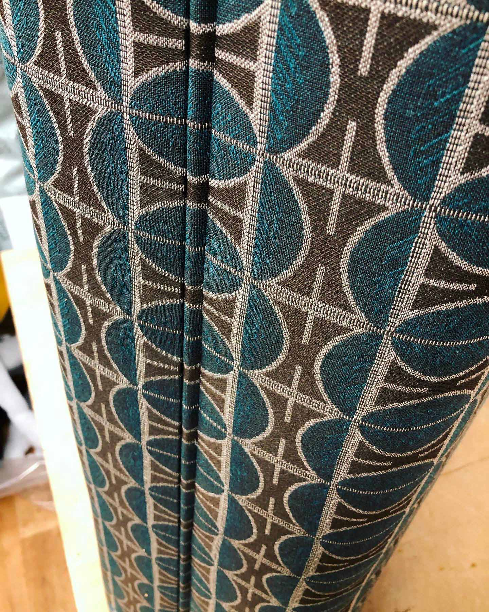
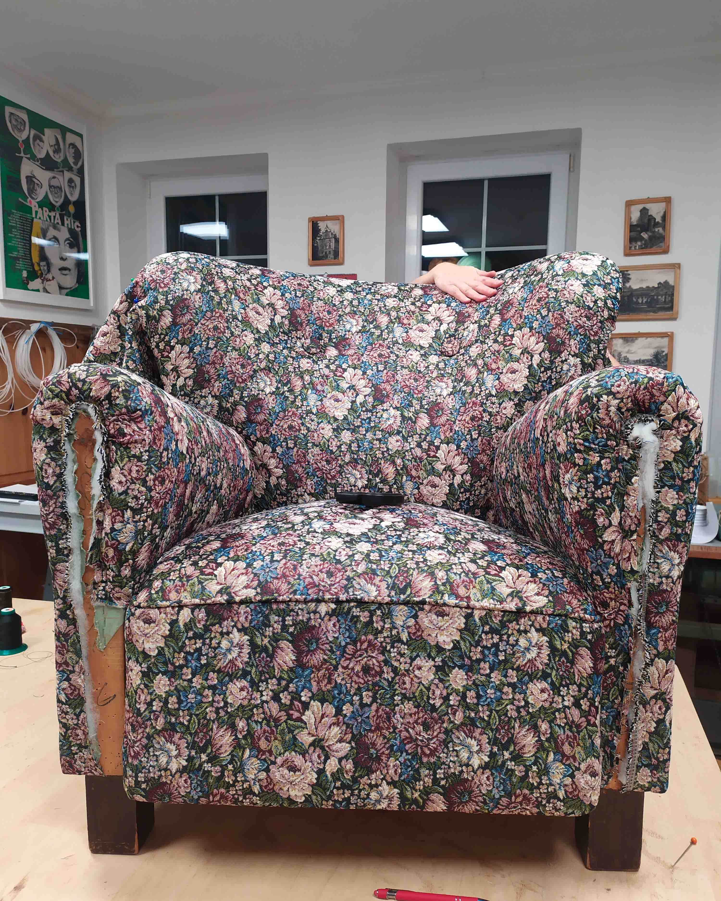
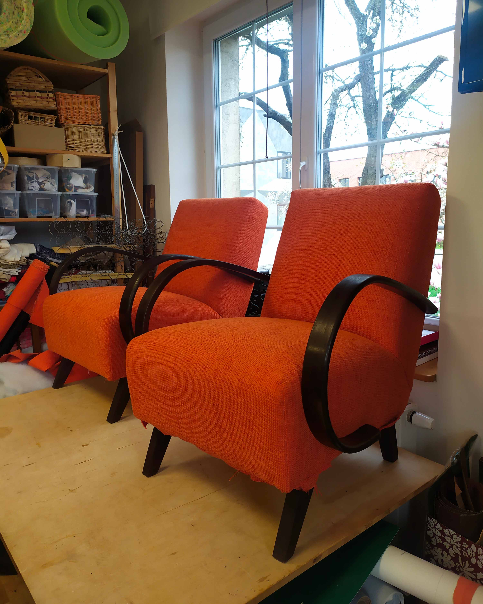
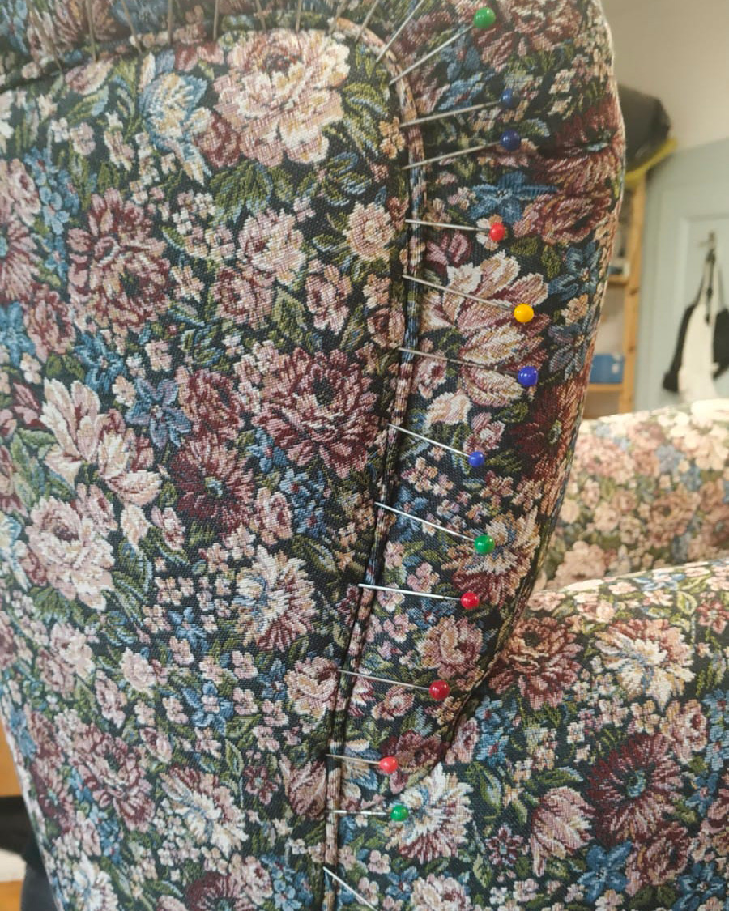
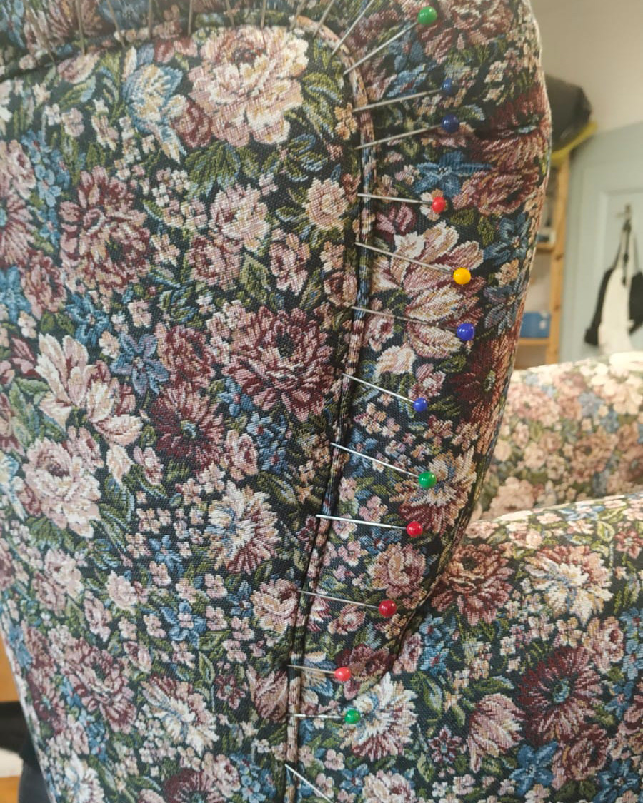
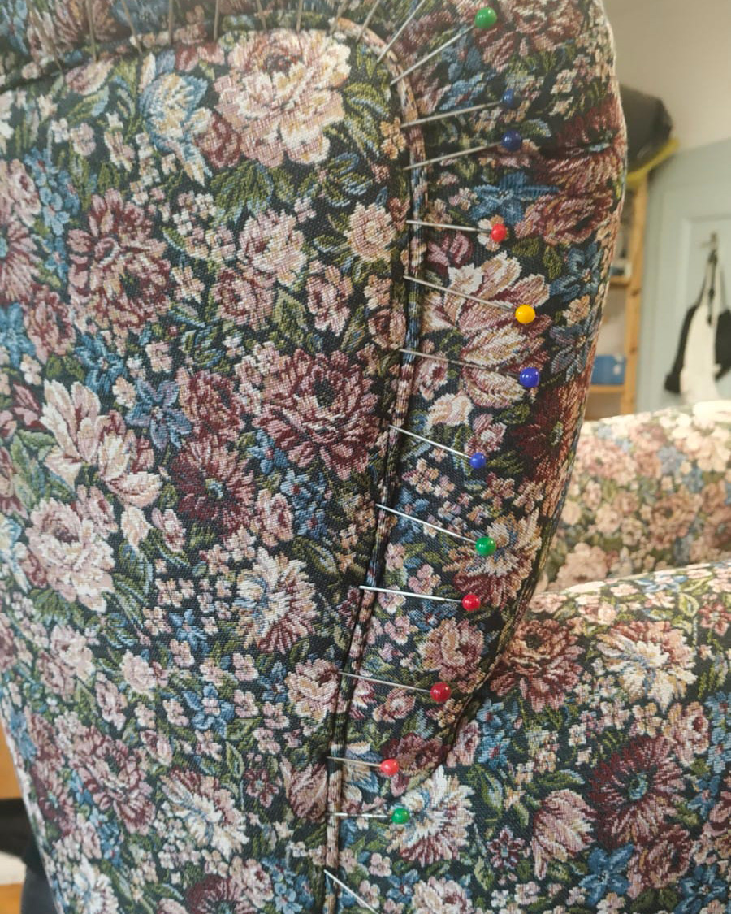

Future of your furniture. Budoucnost vašeho nábytku.
Čalounictví a renovace nábytku se sídlem v Týnci nad Sázavou.
CO NABÍZÍME
Renovace vašeho nábytku
Máte doma kousek, kterého se nechcete vzdát, i když už to není ono? Pohodlnou sedačku, co nesedí k nové výmalbě, jídelní židle, co rezignovaly na původní funkci, nebo křeslo po babičce, které prostě nemáte to srdce vyhodit? V novém kabátě budou dělat ještě dlouho radost.
Hotové ke koupi
Neobvyklé tvary, krásné materiály, výhodné nabídky! Občas i okolo čalouníkovo padne na nějaký Kousek s velkým K, který prostě musí mít. Vize se neptá, jestli má v dílně místo na další set jídelních židlí, futuristické křesílko nebo sexy kancelářskou židli, prostě to koupí. No, a potom, co se na Kousku vyřádí, prostě musí zpět do světa.
Na zakázku
Probudil se ve vás interiérový designér, ale spíš než jasnou jiskru inspirace máte zatím jen mlhavou představu? Žádný problém - prohlédněte si stránky našeho spřáteleného antiku, přivezte úlovek z aukra nebo z bazaru, prohlédněte si naše vzorky látek a dodejme té mlze pořádně ostré obrysy!
GALERIE







 


O FUTURNITURE
Byla nebyla jedna holčička, co měla vždycky lepší ruce, než hlavu.
Čtyři roky na SPŠG Hellichova a navazující studium tamtéž ji příkladně připravilo na pozici restaurátora papíru v Národním archivu, odkud však v roce 2017 prchla hledat štěstí jinde.
Zkusit se má všechno, ale z teplého místečka v nadnárodní korporaci ji vyhnala neschopnost soustředit se na čtyři tisíce řádků Excelu a to, že si sice může dovolit každý den velké latte, ale taky že bez té kávy jaksi nedokáže už fungovat.
V roce 2020 dala kanceláři sbohem a pak se svět zastavil. Člověku občas dá vesmír znamení, ale světová pandemie se zdá být trochu extrémní.
Čalounictví se zjevilo jako blesk z čistého nebe v podobě narozeninového kurzu, kde tahle holka zjistila, jak moc jí chybí mít ruce od lepidla a že kvalifikovaná manuální práce vždy byla, je a bude cesta, kterou se jako osobnost potřebuje vydat. A se stejnou razancí blesku jí do života vstoupila i mentorka Adriana Ondračková, co ji vzala pod svá křídla a doslova jí převrátila život naruby.
A tady se potkáváme. Tady je místo, kde mám být.
S Adrianou spolupracuji doteď a najdete nás v jejím překrásném domě v Týnci, na břehu Sázavy.
Mimochodem, ten kofein mě pohání pořád.
KONTAKT
Kristýna Bímanová
K Náklí, Týnec nad Sázavou
Česká republika
kristyna.bimanova@gmail.com
721 028 608